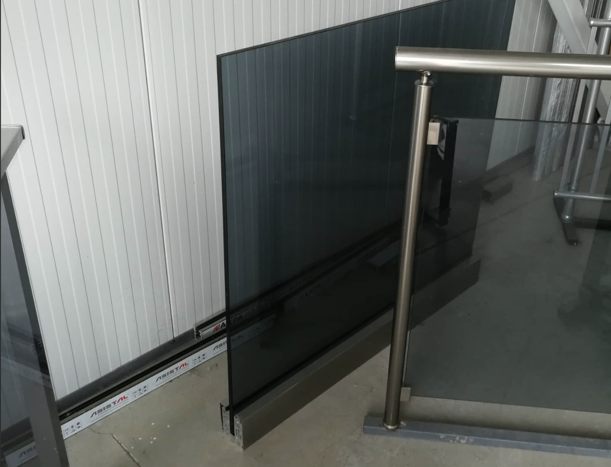
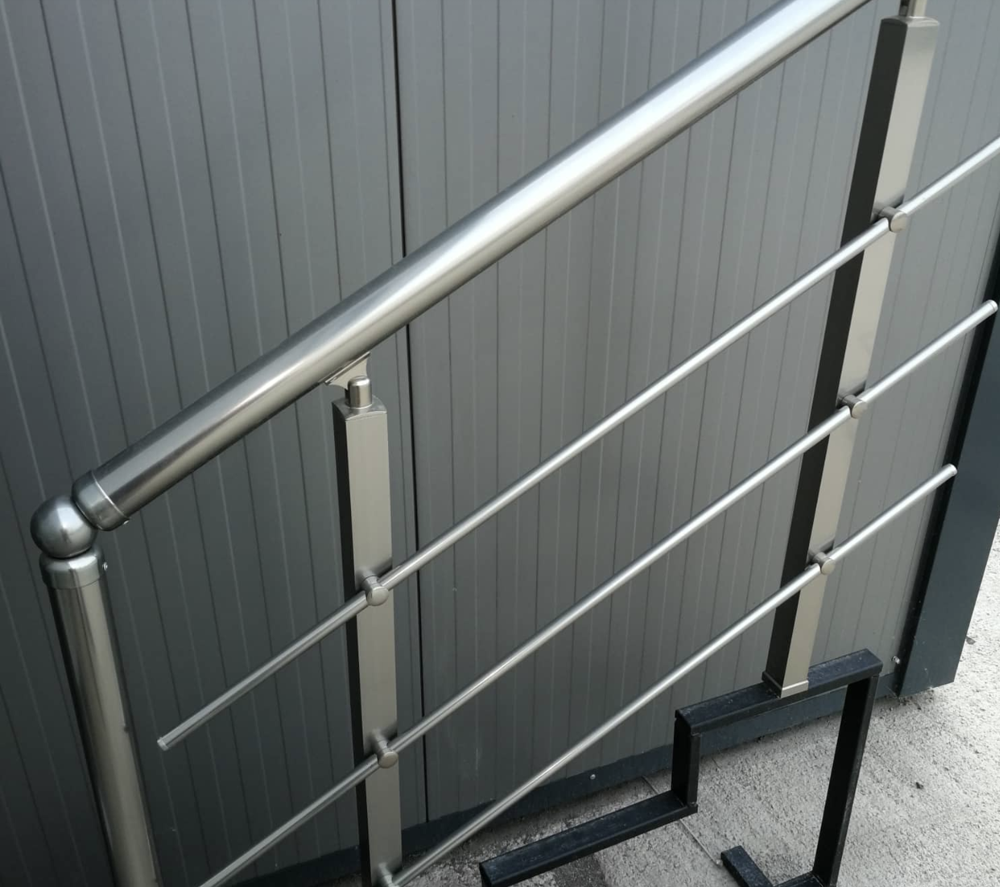
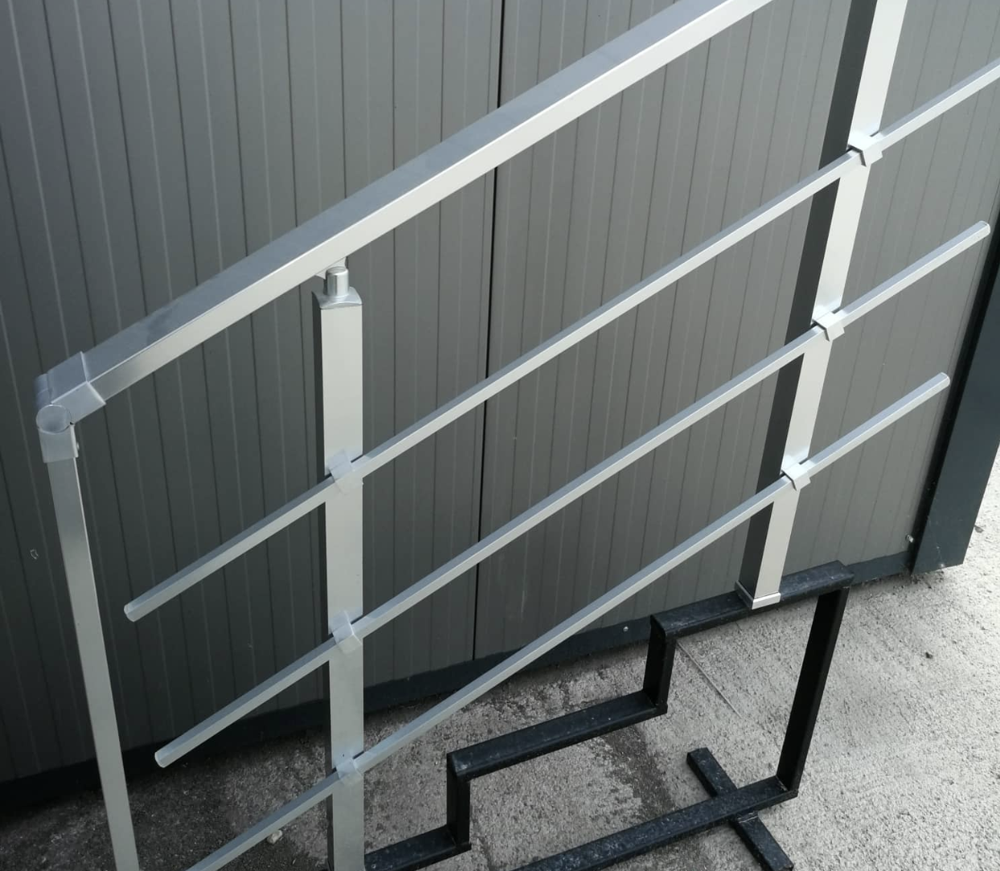
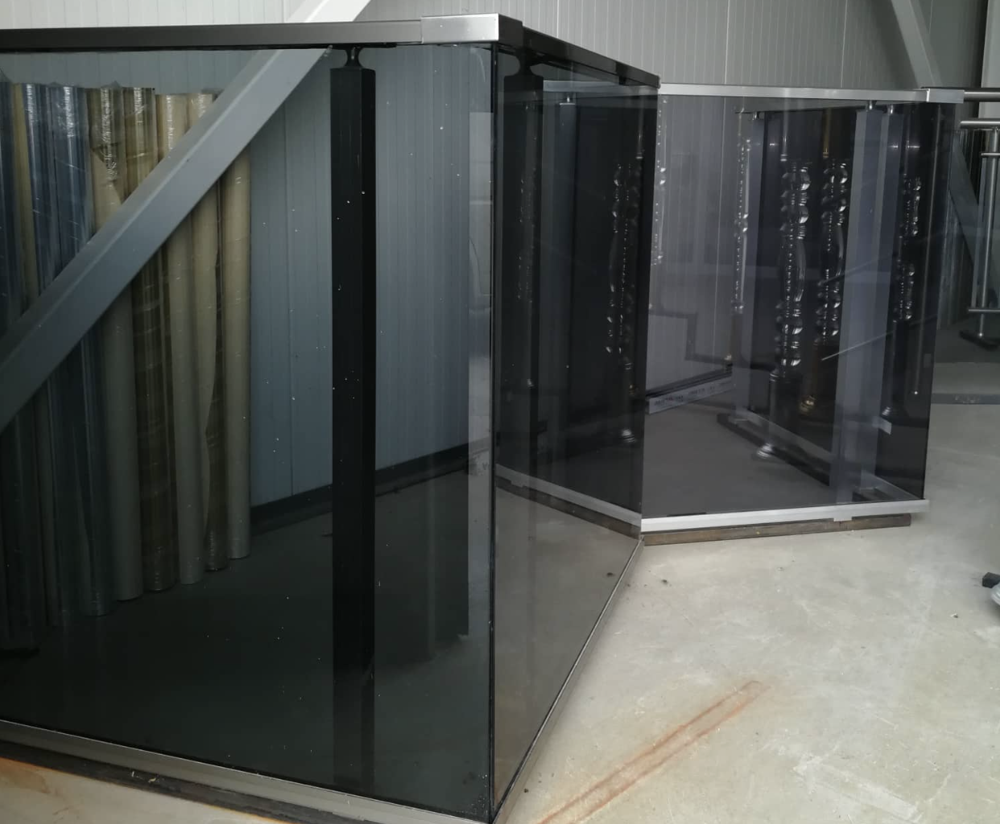

Варианти

Варианти на алуминиеви и стъклени парарпети
Възможни са комбинации от кръгли и квадратни профили, с вертикален (тип френски парапет) или хоризонтален (тип струни) пълнеж, със стъкло и други. Покритието е с висока якост - стандартно в 2 нюанса - натурален цвят и цвят шампанско, но ALUREX предлага боядисване във всякакъв цвят по каталога на RAL системата.
Кръгла система със струни
Алуминиевия парапет с хоризонтални струни е най-разпространеният модел за стълбища. По хоризонтала се поставят кръгли алуминиеви тръби с диаметър ф 16 или така наречените струни. Масово се изработва с 3 броя хоризонтални струни, но може този брой да се увеличава или намаля. Този парапет намира приложение също при прегради на партерни помещения и дворни пространства. Не се препоръчва за тераси, на които трябва да се изгради цялата височина от пода. Поради голямото разстояние между профилите е изключително опасен за малки деца. Стандартната ръкохватка е алуминиева с диаметър 50 мм.
Кръгла система със струни

Квадратна система със струни

Квадратна система със струни
Изключително красива система, която е една от най-предпочитаните. Придава стилен и изискан вид на всяка фасада. Изработва се от квадратни и правоъгълни алуминиеви профили, като ръкохватката е правоъгълна алуминиева с размери 25мм х 60мм, колонките са с размери 40мм х 40мм и струни с размери 14мм х 14мм. Този тип парапет разполага с изключителна здравина. Масово се изработва с 3 броя хоризонтални струни, но може този брой да се увеличава или намаля. Този парапет намира приложение също при прегради на партерни помещения и дворни пространства.
Стъклен парапет
Изключително стилна и модеррна система. Придава футуристичен и страшно изискан вид на всяка фасада. Изработва се от квадратни и правоъгълни алуминиеви профили, като ръкохватката е правоъгълна алуминиева с размери 25мм х 60мм, колонките са с размери 40мм х 40мм. Стъклата се поставят пред колонките, като между тях се оставят малки разстояния. Те са тип триплекс с дебелина 8мм. Изпълняват се в следните цветове - прорзрачно, кафяво, сиво, синьо, зелено, матово.
Стъклен парапет
